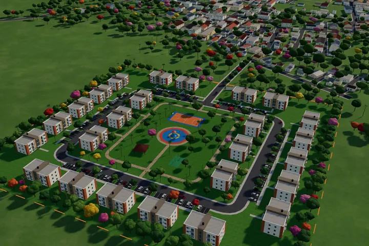
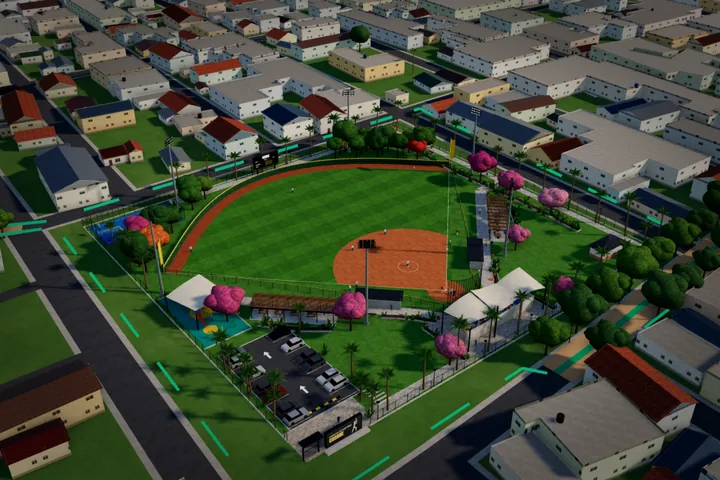
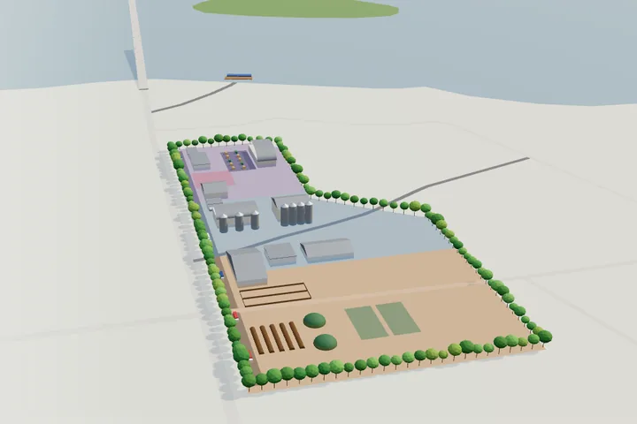
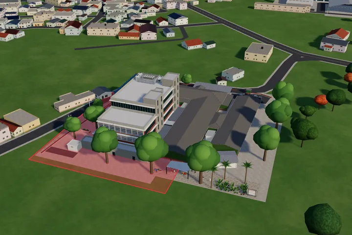
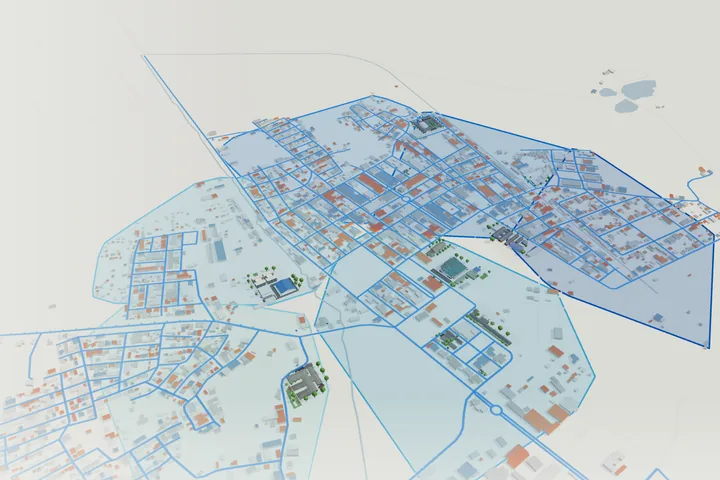
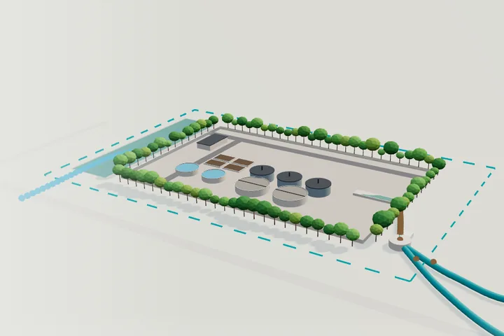
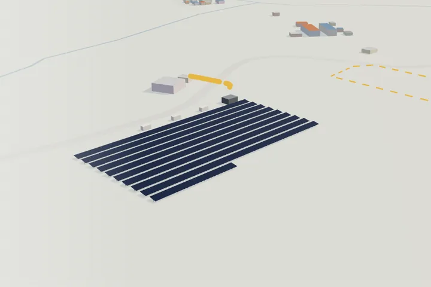
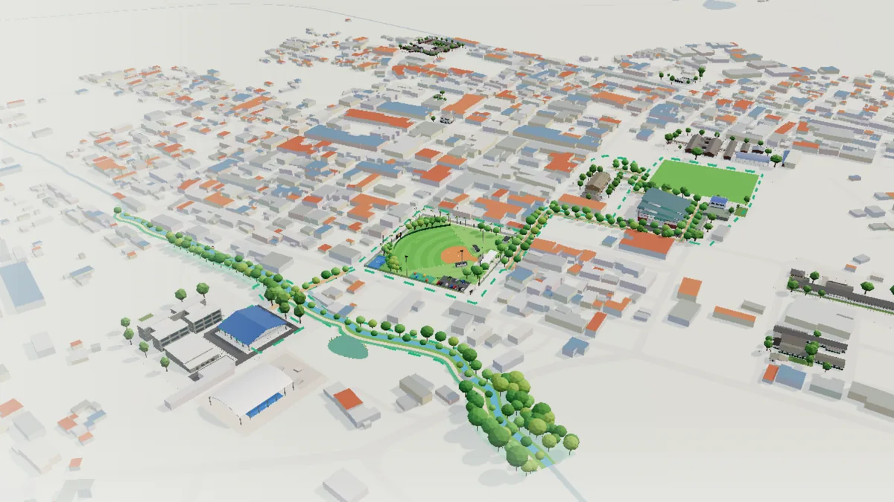
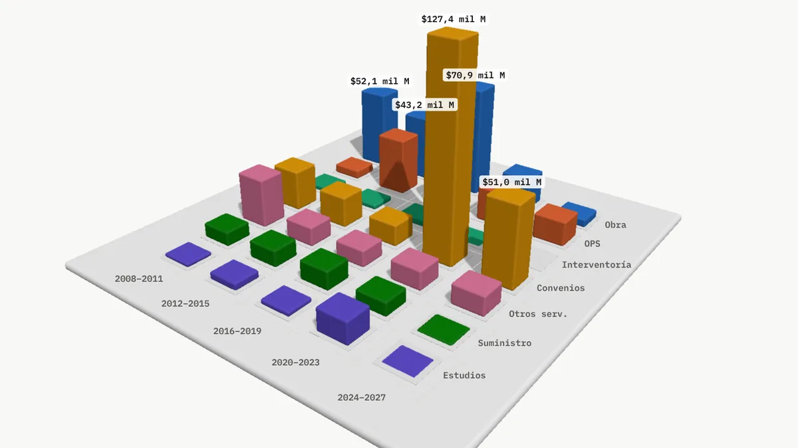

Yondó, Antioquia · 2028–2031
¡Trabajemos juntos!
Siete áreas, un municipio: cada obra con su sitio, su costo y su fuente.
Sorteo en vivo
La ruleta de ¡Trabajemos juntos!
Un número del 1 al 1.200, elegido al azar en el momento del giro. ¡Que gire la suerte para Yondó!
¡Tenemos número ganador!
?
Siete áreas, un solo plan
Elija una para verla en la maqueta 3D.

ViviendaTerminar lo pagado y dar vivienda digna a 1.300 hogares
UrbanismoUna ciudadela deportiva verde y una puerta al río
AgroindustriaGanado, grano y pescado salen de Yondó ya transformados
SaludUna torre segura, prevención casa a casa y telemedicina
AguasDe 9 a 24 horas de agua en el casco
Aseo y saneamientoAguas residuales tratadas, un relleno nuevo y un parque en el viejo
Conectividad y energíaFibra, wifi gratis y una granja solar para lo público Toda la propuestaCostos aproximados, fuentes de financiación y hoja de rutaLas dos partes del sitio

Propuesta 2028–2031
Lo que proponemos construir
Cada obra sobre la maqueta del territorio real, con su costo aproximado y de dónde sale la plata.
Abrir la propuesta
Atlas Yondó
Lo que pasó con la plata
Contratos, obras y datos de seis gobiernos desde 2004, cada cifra con su fuente.
Abrir el atlas